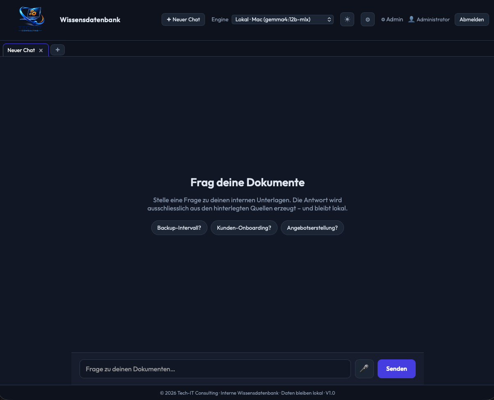

Die RAG Wissensdatenbank macht dein internes Firmenwissen per Chat nutzbar: aus PDFs, Word-Dateien, Excel-Tabellen, PowerPoints, Scans und Bildern. Auf Wunsch lokal betrieben, mit Benutzerrechten und nachvollziehbaren Quellen.

In vielen Betrieben liegen wichtige Informationen verteilt auf Dateiservern, Netzwerklaufwerken, SharePoint-Ordnern, PDFs, Excel-Listen und alten Projektordnern. Die Dateien sind vorhanden. Aber wenn jemand eine konkrete Antwort braucht, beginnt die Suche.
Mitarbeiter verlieren Zeit mit Ordnern, Dateinamen, Versionsständen und verstreuten Ablagen.
Wissen hängt an einzelnen Personen statt am System. Das wird spätestens bei Urlaub oder Wechsel teuer.
Allgemeine KI hilft, aber ohne Firmenkontext bleiben Antworten oft zu generisch oder falsch.
Bei internen Dokumenten, Kundendaten und vertraulichen Infos braucht es Kontrolle statt Experiment.
Die RAG Wissensdatenbank verbindet deine bestehenden Dokumente mit einem KI-Chat. Du stellst eine Frage in normaler Sprache. Das System sucht die passenden Stellen, fasst sie verstaendlich zusammen und zeigt die Quellen direkt mit an.
Beispielfragen aus dem Alltag
"Wie starte ich Maschine X nach einer Stoerung wieder?"
"Welche Unterlagen braucht ein neuer Kunde beim Onboarding?"
"Was steht im letzten Angebot zu den Zahlungsbedingungen?"
"Gibt es dazu eine Anleitung, ein Protokoll oder eine Vorlage?"
Die Wissensdatenbank ist für den Alltag in KMU gedacht: gemischte Dateitypen, alte Dokumente, Scans, Rechte, Quellen und pragmatischer Betrieb.
PDF, Word, Excel, PowerPoint, CSV, HTML, Textdateien und Bilder werden indexiert.
Jede Antwort verweist auf passende Dokumente. Bei PDFs auch mit direktem Seitenbezug.
Gescannte PDFs und Bilddateien können per Texterkennung durchsuchbar gemacht werden.
Die Lösung kann auf eigener Infrastruktur oder in einer kontrollierten Umgebung laufen.
Mitarbeiter sehen nur die Ordner, für die sie berechtigt sind. Admins verwalten Freigaben.
Neue oder geänderte Dateien werden erkannt und nachindexiert, ohne alles neu aufzusetzen.
Gerade bei KMU ist nicht die Frage, ob KI spannend ist. Die Frage ist: Wie nutzt man sie sicher, nachvollziehbar und passend zum eigenen Betrieb? Deshalb werden Datenquellen, Benutzerrechte und KI-Anbindung bewusst konfiguriert.
Pragmatisch starten, mit echten Fragen testen und dann Schritt für Schritt ausbauen.
Wir klären Dokumente, Ordner, typische Fragen und Datenschutz-Anforderungen.
Installation, Benutzer, Gruppen, Datenquellen und KI-Engine werden eingerichtet.
Die Dokumente werden eingelesen und mit typischen Fragen aus dem Alltag getestet.
Suchqualität, Rechte, Quellen und Bedienung werden auf deinen Betrieb angepasst.
Kurze Team-Einweisung, klare Regeln und ein Start mit echtem Nutzen.
Die RAG Wissensdatenbank ist kein anonymes Abo-Tool, sondern eine installierte Lösung für deine eigenen Daten. Deshalb besteht der Preis aus einmaliger Einrichtung plus Jahreslizenz oder Lifetime-Lizenz.
Für den produktiven Einstieg mit einem klar abgegrenzten Dokumentenbereich und einem pragmatischen Rechtekonzept.
Für mehrere Datenquellen, eigene Infrastruktur, lokale KI, Spezialworkflows oder komplexere Rechte- und Prozessanforderungen.
Alle genannten Preise verstehen sich zzgl. gesetzlicher Umsatzsteuer.
Die Jahreslizenz enthält Nutzung, Updates und technischen Basissupport für 12 Monate. Die Lifetime-Lizenz enthält die dauerhafte Nutzung der gekauften Version; Update- und Supportpakete können optional ergänzt werden. KI-API-Kosten, Server-Hardware oder Hosting werden je nach Betriebsmodell separat kalkuliert. Das Erstgespräch ist kostenlos.
Wenn du wissen willst, ob eine KI-Wissensdatenbank für deinen Betrieb sinnvoll ist, schauen wir uns das gemeinsam an. Ohne Fachchinesisch, ohne Hype — einfach mit deinen echten Dokumenten und deinen echten Fragen.
Kostenlose Erstberatung anfragen